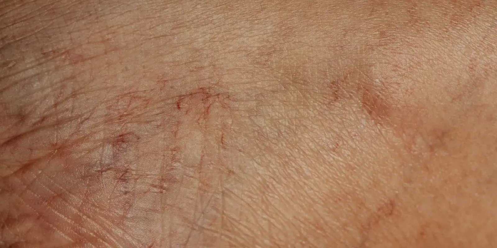

Insuficiencia venosa en hombres: por qué se consulta menos
Casi ningún hombre que trabaja de pie en Medellín llega a consulta pensando en sus venas. Llega pensando que el cansancio del turno se le quedó pegado en las piernas. La insuficiencia venosa existe en hombres, a veces con la misma frecuencia que en mujeres, pero casi siempre se consulta años después.

Vigilantes, vendedores de almacén, meseros, operarios de bodega, personal de seguridad privada: en Medellín hay miles de hombres así, de pie turno tras turno, que terminan el día con las piernas pesadas y lo resuelven con un masaje rápido o un "ya se me pasa durmiendo". Pocos piensan en insuficiencia venosa en hombres como posibilidad, porque la idea instalada dice que eso es cosa de mujeres.
No es solo cosa de mujeres
La insuficiencia venosa crónica se diagnostica con más frecuencia en mujeres, y eso alimenta la idea de que es casi exclusiva de ellas. Pero la evidencia no es tan clara. El Edinburgh Vein Study, uno de los estudios poblacionales más citados sobre el tema, encontró una prevalencia de insuficiencia venosa del 9 % en hombres frente al 7 % en mujeres, y de várices troncales del 40 % frente al 32 %.
La diferencia no está tanto en quién la tiene, sino en quién la cuenta.
Por qué la insuficiencia venosa en hombres se consulta tan tarde
Una revisión sistemática publicada a finales de 2025, que reunió datos de más de 12.000 hombres, encontró que ellos suelen llegar a consulta en etapas más avanzadas de la enfermedad que las mujeres: con reflujo venoso más marcado, cambios en la piel y, en algunos casos, úlceras ya formadas. Entre los factores que más se repetían en esos casos avanzados estaban la obesidad, los trabajos de pie durante muchas horas, el cigarrillo y, sobre todo, la consulta tardía.
Esto coincide con algo documentado en salud masculina en general: los hombres piden cita médica con menos frecuencia que las mujeres, postergan revisiones y, cuando sí van, tienden a restarle importancia a lo que sienten. La pesadez en las piernas entra fácil en esa misma lógica: "es por estar de pie", "ya se me pasa", "no es para tanto".
Un hombre con insuficiencia venosa no suele ser un caso raro. Es, casi siempre, un caso que tardó años en llegar a consulta.
Qué más eleva el riesgo si trabajas de pie en Medellín
Trabajar muchas horas de pie en comercio, seguridad, salud o construcción no es el único factor en juego: también suman el sedentarismo fuera del trabajo, el sobrepeso, fumar y tener familiares con várices o problemas de circulación. Ninguno de estos por sí solo "causa" la insuficiencia venosa, pero juntos hacen que las válvulas de las venas trabajen de más, año tras año.
Tener uno o varios de estos factores no es lo mismo que tener insuficiencia venosa. Son eso: factores que suman riesgo, no un diagnóstico.
En Seravena preferimos no dar por hecho que la pesadez de piernas es "normal" solo porque el trabajo lo exige. Si el síntoma se repite semana tras semana y no mejora con el descanso, merece una revisión, no solo paciencia.
Señales que no conviene dejar pasar
- Piernas pesadas o cansadas que empeoran al final del día y de pie.
- Hinchazón en los tobillos que baja al elevar las piernas, pero vuelve cada tarde.
- Calambres nocturnos frecuentes.
- Venas visibles nuevas, más gruesas o más oscuras que antes.
- Piel de los tobillos que cambia de color o se siente más dura.
¿Quieres entender cómo se llega al diagnóstico en estos casos? En nuestra guía sobre cómo se diagnostica un problema venoso explicamos el proceso completo, desde la primera pregunta hasta la imagen. Y si lo que te preguntas es qué examen exacto te van a hacer, aquí respondemos qué es el eco doppler venoso y qué detecta.
Qué hacer si te reconoces en esto
Antes de agendar nada, haz un ejercicio simple esta semana: fíjate si la hinchazón baja cuando te acuestas con las piernas elevadas un rato, o si sigue igual al día siguiente. Anótalo. Ese solo dato ya le dice bastante a quien te revise.
Si decides dar el paso, puedes leer antes cómo prepararte para tu primera valoración vascular: qué llevar, qué te van a preguntar y qué examen suele hacerse el mismo día. En Seravena esa valoración, con eco doppler venoso en Medellín, se hace en el mismo consultorio, es particular y se agenda directo, sin esperar remisión de la EPS.
Una revisión a tiempo no cura nada por sí sola, pero sí cambia la conversación: en vez de adivinar qué tienen tus piernas, sabes exactamente de qué estás hablando. Agenda una valoración cuando quieras dar ese paso.
Preguntas frecuentes
¿La insuficiencia venosa es solo un problema de mujeres?
No necesariamente. Estudios poblacionales como el Edinburgh Vein Study han encontrado una prevalencia similar o incluso algo mayor en hombres. Lo que cambia es que ellos consultan mucho menos, y por eso el diagnóstico se registra con más frecuencia en mujeres.
¿Por qué los hombres consultan menos por problemas de venas?
Suelen atribuir la pesadez o la hinchazón al cansancio del trabajo, y en general piden cita médica con menos frecuencia y restan importancia a los síntomas. Eso hace que, cuando finalmente consultan, la enfermedad esté en una etapa más avanzada.
¿Qué señales debe notar un hombre que trabaja muchas horas de pie?
Piernas pesadas que empeoran al final del día, hinchazón en los tobillos, calambres nocturnos frecuentes, venas más visibles o gruesas que antes, y cambios de color o textura en la piel de los tobillos. Si varias de estas señales se repiten, vale la pena una valoración.
¿Cómo se diagnostica la insuficiencia venosa en hombres?
Igual que en mujeres: con una valoración clínica y un eco doppler venoso, un examen con ultrasonido que muestra cómo funcionan las válvulas de las venas. No duele y no requiere preparación especial.